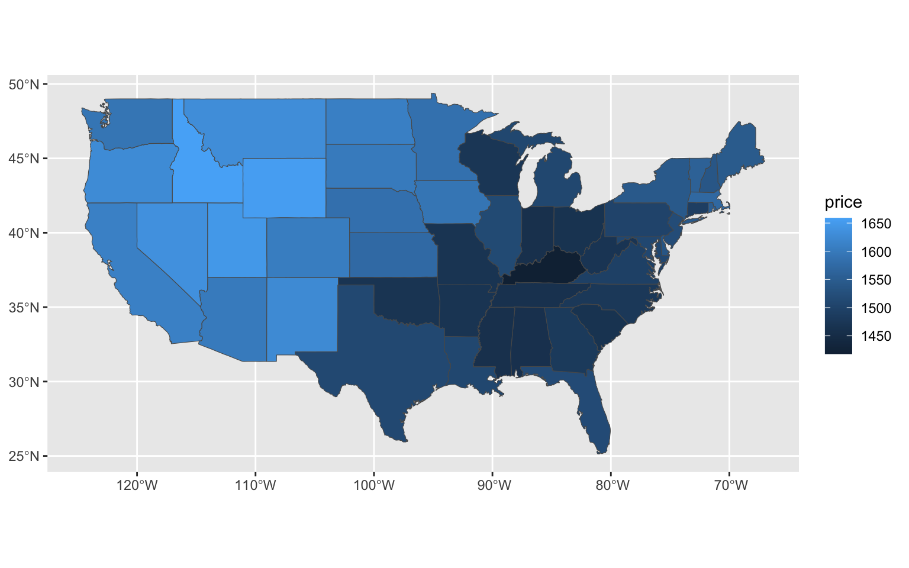
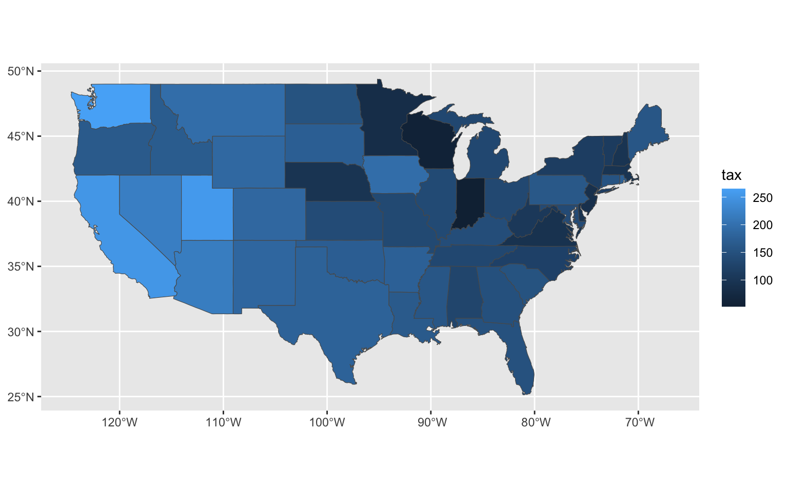
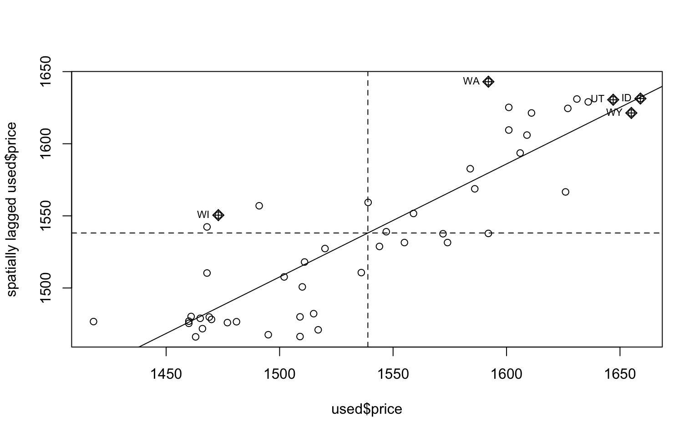
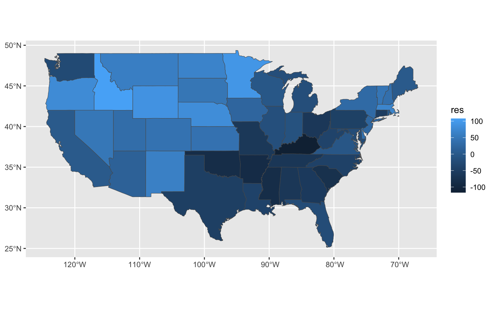
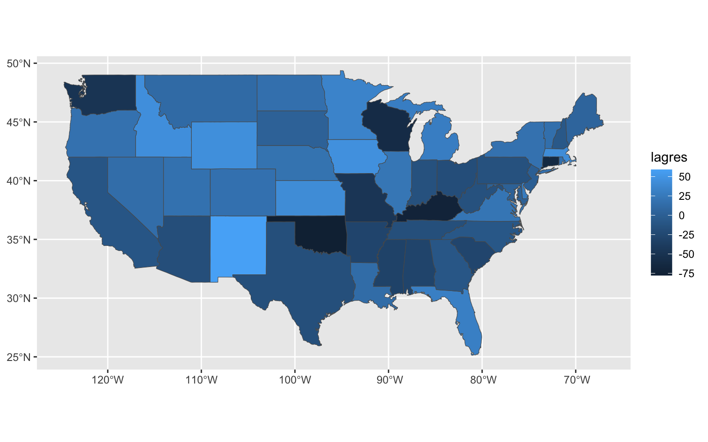

library(ggplot2)
library(sf)
library(maps)
library(dplyr)
library(spData)
library(spdep)
library(spatialreg)data(used.cars)
head(used.cars)## tax.charges price.1960
## AL 129 1461
## AZ 218 1601
## AR 176 1469
## CA 252 1611
## CO 186 1606
## CT 154 1491First, we read into the us states maps and convert it the sf object.
state_sf = sf::st_as_sf(maps::map("state", plot = FALSE, fill = TRUE))Note that the state names in used_cars are abbreviation while full names in state_sf. We want to combine these datasets together by names, and used state.csv which includes both abbreviation and full names of all states.
abb = read.csv("datasets/states.csv")
abb = abb |> mutate(state_lower = tolower(State))
used.cars$Abbreviation = rownames(used.cars)
head(abb)## State Abbreviation state_lower
## 1 Alabama AL alabama
## 2 Alaska AK alaska
## 3 Arizona AZ arizona
## 4 Arkansas AR arkansas
## 5 California CA california
## 6 Colorado CO coloradohead(state_sf)## Simple feature collection with 6 features and 1 field
## Geometry type: MULTIPOLYGON
## Dimension: XY
## Bounding box: xmin: -124.3834 ymin: 30.24071 xmax: -71.78015 ymax: 42.04937
## Geodetic CRS: +proj=longlat +ellps=clrk66 +no_defs +type=crs
## ID geom
## alabama alabama MULTIPOLYGON (((-87.46201 3...
## arizona arizona MULTIPOLYGON (((-114.6374 3...
## arkansas arkansas MULTIPOLYGON (((-94.05103 3...
## california california MULTIPOLYGON (((-120.006 42...
## colorado colorado MULTIPOLYGON (((-102.0552 4...
## connecticut connecticut MULTIPOLYGON (((-73.49902 4...used = state_sf |> rename(state_lower = ID) |> left_join(abb, by = "state_lower") |> right_join(used.cars, by = "Abbreviation") |> rename(price = price.1960, tax = tax.charges)Next, we visualise the price variable and tax variable. We can see there is a spatial dependence for both variables.
ggplot() + geom_sf(data = used, aes(fill = price))
ggplot() + geom_sf(data = used, aes(fill = tax))
moran.test(used$price, nb2listw(usa48.nb))##
## Moran I test under randomisation
##
## data: used$price
## weights: nb2listw(usa48.nb)
##
## Moran I statistic standard deviate = 8.1752, p-value < 2.2e-16
## alternative hypothesis: greater
## sample estimates:
## Moran I statistic Expectation Variance
## 0.783561543 -0.021276596 0.009692214moran.plot(used$price, nb2listw(usa48.nb),
labels=used$Abbreviation)
If we fit a linear model, we can see the resulting residuals are still spatially correlaed.
mod_ls <- lm(price ~ tax, data=used)
summary(mod_ls)##
## Call:
## lm(formula = price ~ tax, data = used)
##
## Residuals:
## Min 1Q Median 3Q Max
## -116.701 -45.053 -1.461 43.400 107.807
##
## Coefficients:
## Estimate Std. Error t value Pr(>|t|)
## (Intercept) 1435.7506 27.5796 52.058 < 2e-16 ***
## tax 0.6872 0.1754 3.918 0.000294 ***
## ---
## Signif. codes: 0 '***' 0.001 '**' 0.01 '*' 0.05 '.' 0.1 ' ' 1
##
## Residual standard error: 57.01 on 46 degrees of freedom
## Multiple R-squared: 0.2503, Adjusted R-squared: 0.234
## F-statistic: 15.35 on 1 and 46 DF, p-value: 0.0002939used$res = mod_ls$residuals
ggplot() + geom_sf(data = used, aes(fill = res))
mod_lag <- lagsarlm(price ~ tax, data=used,
nb2listw(usa48.nb))
summary(mod_lag)##
## Call:lagsarlm(formula = price ~ tax, data = used, listw = nb2listw(usa48.nb))
##
## Residuals:
## Min 1Q Median 3Q Max
## -77.6781 -16.9504 4.2497 19.5484 58.9811
##
## Type: lag
## Coefficients: (asymptotic standard errors)
## Estimate Std. Error z value Pr(>|z|)
## (Intercept) 309.42546 123.03167 2.5150 0.0119
## tax 0.16711 0.10212 1.6364 0.1018
##
## Rho: 0.78302, LR test value: 42.681, p-value: 6.4426e-11
## Asymptotic standard error: 0.081636
## z-value: 9.5916, p-value: < 2.22e-16
## Wald statistic: 91.998, p-value: < 2.22e-16
##
## Log likelihood: -239.8252 for lag model
## ML residual variance (sigma squared): 1036.7, (sigma: 32.197)
## Number of observations: 48
## Number of parameters estimated: 4
## AIC: 487.65, (AIC for lm: 528.33)
## LM test for residual autocorrelation
## test value: 2.1141, p-value: 0.14594used$lagres = mod_lag$residuals
ggplot() + geom_sf(data = used, aes(fill = lagres))